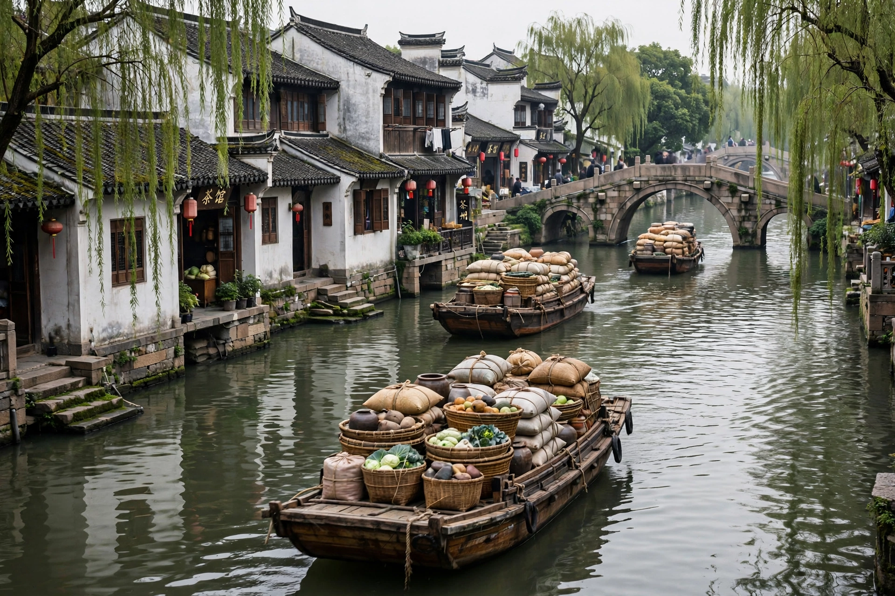

[Image placeholder: The Grand Canal at Suzhou, with barges and old waterside houses]The **Grand Canal** of China, known as the Jing–Hang Grand Canal, is the longest artificial waterway in the world, running about 1,776 km from Beijing in the north to Hangzhou in the south. Begun in the fifth century BC and unified under the Sui dynasty (581–618), it linked the Yellow and Yangtze river systems, letting grain from the fertile south feed the capital and northern armies — the economic spine of imperial China for over a millennium.
The canal was rebuilt on a straighter route under the Yuan dynasty (1271–1368) and maintained by the Ming and Qing. Its pound locks (invented in 984, centuries before Europe's), towpaths, granaries and flood works are a masterpiece of hydraulic engineering. Decline came with the Yellow River's catastrophic 1855 course change, silting, and competition from sea shipping and railways; the canal is now a UNESCO World Heritage Site (2014), and its northern sections are being rewatered for heritage navigation while the southern Jiangnan sections still carry heavy barge traffic.
Emperor Yang of Sui mobilised millions of labourers to dig the central sections (605–610) — a feat that helped exhaust and topple his dynasty. The canal climbs over the Shandong heights between the two great rivers by flights of locks fed by summit-level lakes and springs.